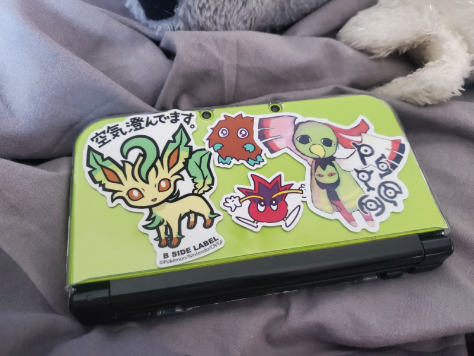
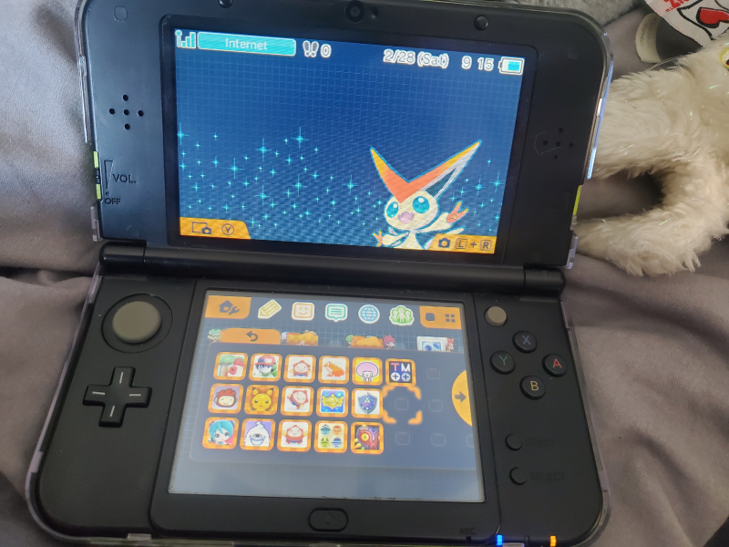

A couple of weeks ago, I participated in 32-Bit Cafe's Valentine's event. The prompt I chose was to write a love letter for a piece of media (or something else) that you adore! I wrote about Pokemon, and you can check out my entry here. Anyways, the point I'm getting at here, is that it made me reminisce about the DS/3DS era of Pokemon games, as that's the era I grew up in! If you read my little love letter, you'll see I mention wanting to get a 3DS... foreshadowing...
Once I got that idea in my head, I couldn't stop thinking about it. I looked into 3DS modding and realized yes, it really *is* easy to mod your 3DS. So I settled on searching for a New 3DS XL/LL model, and while they're more expensive than finding a regular 3DS on Ebay (or wherever), I liked how they're bigger and have better performance.
Now, I have a 2DS as well as a DSi XL. So why get a new system on top of that? Well, my 2DS is kind of chopped. I don't like how its just a square with 2 screens, I much prefer the folding function. Also... when I was younger, I may have tried to "customize" it by.. painting directly onto the body. Then quickly regretted that, but I couldn't remove it all, so now there's chips of white paint all over it. I would also like to have all my games on just one system, and I'm mainly planning to play 3DS games, so there's no point in using/modding my DSi (as much as I love it).
While looking through Ebay, I found about the green and black model for the New 3DS XL. If you couldn't tell, I like green ☺︎ so I found a few different options and settled for a listing from a seller that had multiple units/mass sold them- not for any particular reason, it was just a decent price compared to others, in good quality, and I didn't have to deal with bidding. It was about $260, a little more with shipping, and then I also purchased a plastic case and 32GB microSD card.
Once it came, I did not hesitate to put on the case that I had already decorated with some stickers I found. Here it is! (Xatu/Unown sticker from eyeorb)

Following the
3DS Hacks Guide, I checked for CFW and was surprised to see it already had a
version of Luma3DS that wasn't too far behind! All I had to do was
update it then I was ready to go.
The first thing I did was dive straight into customization LOL.
Downloaded some themes, and then found out about the badges you can
place on the home menu, so I got some of those too!
I dug out my old DS and 3DS games I have physically, and also
downloaded some new ones. Mainly 3DS games, but I got Pokemon
Platinum and Heart Gold as well as TWEWY. Here's my games folder as
well as a look at the current theme I have!

That's pretty much all! So far I've started to replay Alpha
Sapphire, as well as started Platinum. I'm excited to play Rythm
Heaven and I've wanted to check out Yokai Watch, as I've only played
the demo for the first game forever ago. As well as finally play
some Zelda games!!
It's also a long shot, but I want to Streetpass with as many people
as I can LOL. If I ever go to a concert or convention I'll have to
remember to bring my 3DS along.